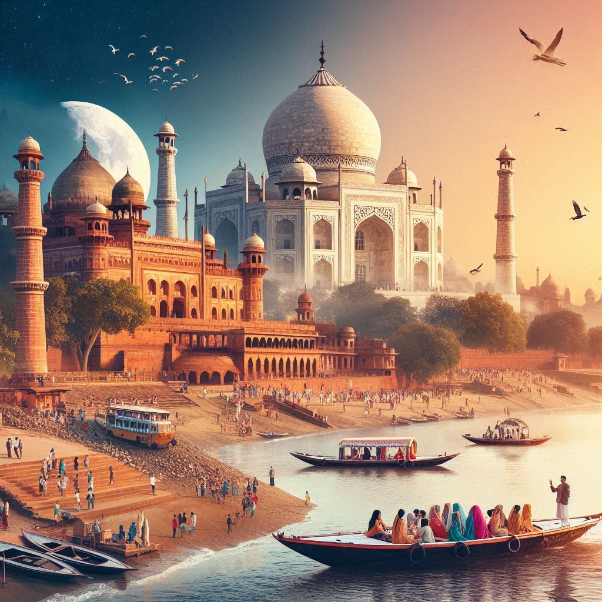
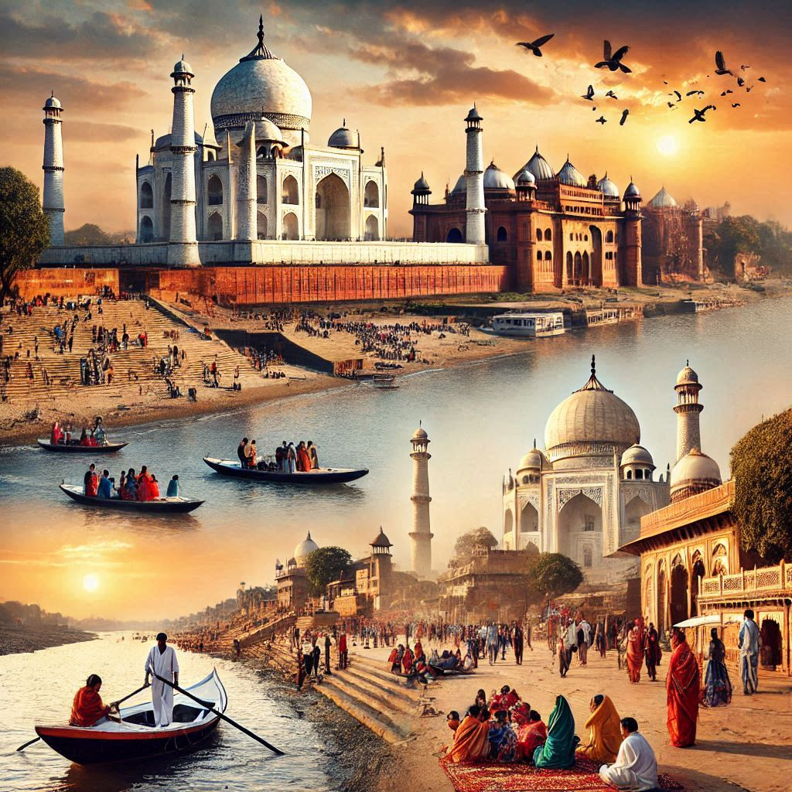

Uttar Pradesh is a significant tourist destination in India, known for its rich cultural heritage, historical landmarks, and religious significance. Here’s an overview of the key attractions and tourism aspects of the state:
1. Historical Sites
- Taj Mahal (Agra): One of the Seven Wonders of the World, this iconic mausoleum built by Emperor Shah Jahan in memory of his wife Mumtaz Mahal is a UNESCO World Heritage Site and a must-visit for tourists.
- Agra Fort: Another UNESCO World Heritage Site, this red sandstone fort showcases Mughal architecture and offers stunning views of the Taj Mahal.
- Fatehpur Sikri: Once the capital of the Mughal Empire, this city is famous for its well-preserved structures, including the Buland Darwaza and the Jama Masjid.
2. Religious Destinations
- Varanasi: One of the oldest living cities in the world, Varanasi is a major pilgrimage site for Hindus. The ghats along the Ganges River are famous for their rituals and ceremonies, including the Ganga Aarti.
- Ayodhya: Believed to be the birthplace of Lord Rama, Ayodhya is a significant site for Hindus, with numerous temples and historical structures.
- Mathura: Known as the birthplace of Lord Krishna, Mathura attracts many pilgrims and tourists interested in its temples and rich cultural heritage.
- Sarnath: A key Buddhist pilgrimage site, Sarnath is where Buddha delivered his first sermon. The site features stupas and the Dhamek Stupa.
3. Cultural Experiences
- Lucknow: Known for its Nawabi culture, Lucknow offers a glimpse into the rich heritage of the Awadh region. Attractions include the Bara Imambara, Chota Imambara, and the historic markets of Aminabad and Hazratganj.
- Traditional Arts and Crafts: Visitors can explore local crafts, including chikan embroidery in Lucknow and Banarasi silk sarees in Varanasi.


4. Natural Attractions
- National Parks: Uttar Pradesh is home to several national parks, including Dudhwa National Park, which is known for its diverse wildlife, including tigers and rhinoceros.
- Rivers and Ghats: The banks of the Ganges River provide serene spots for relaxation and spiritual reflection, with numerous ghats that are significant for rituals and ceremonies.
5. Festivals
- Kumbh Mela: Held every 12 years in Allahabad (Prayagraj), this massive pilgrimage and festival attracts millions of devotees and tourists. It is a unique cultural and spiritual experience.
- Diwali and Holi: Participating in local celebrations during these festivals offers insights into the region's vibrant culture and traditions.
6. Accessibility
- Transport: Uttar Pradesh is well-connected by rail, road, and air. Major cities like Agra, Varanasi, and Lucknow have airports, and the extensive railway network facilitates travel across the state.
- Tour Packages: Many travel agencies offer packages that include visits to major attractions, making it easier for tourists to explore the state's offerings.
Conclusion
Uttar Pradesh is a treasure trove of history, spirituality, and culture, making it a prime destination for travelers. Whether exploring the majestic Taj Mahal, experiencing the spiritual ambiance of Varanasi, or indulging in the local cuisine, visitors are sure to find a wealth of experiences in this diverse and vibrant state.